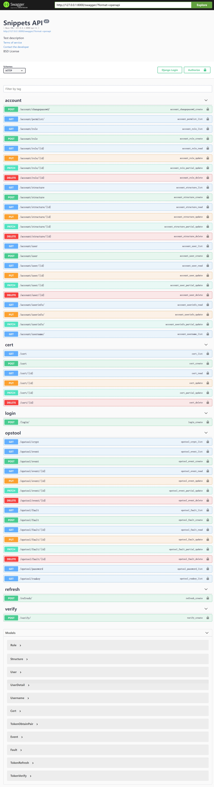
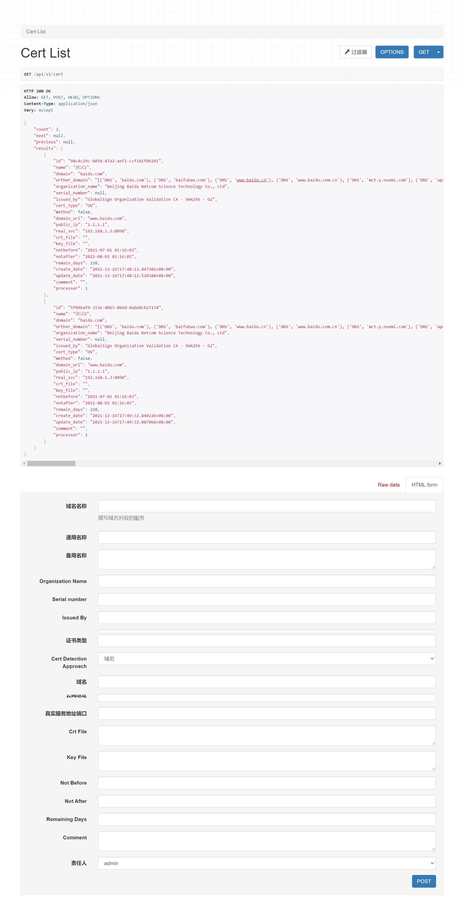
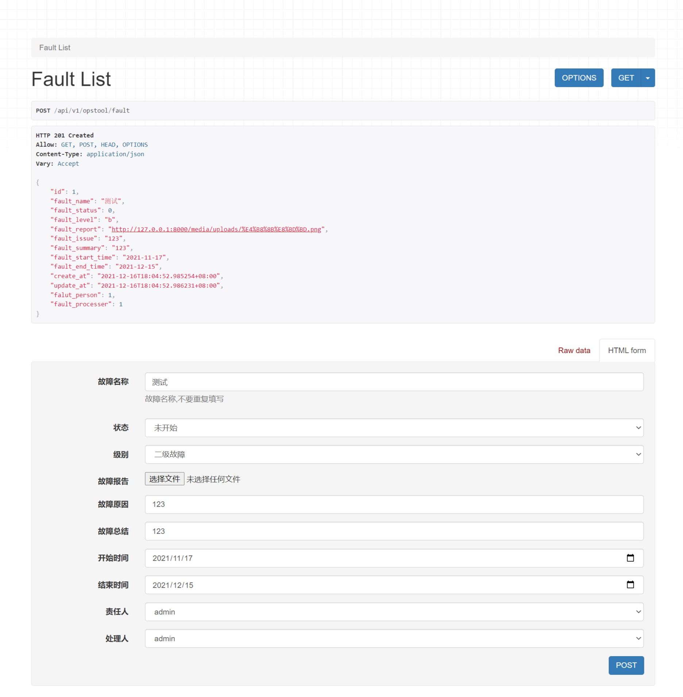
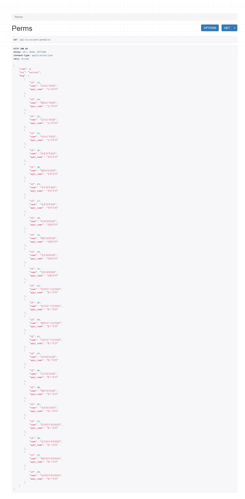

django drf框架重写CMDB模块
目前使用的CMDB是开源的工具，某些功能缺失。其他开源工具有类似模块，但框架不同，所以用Django REST framework 重写了故障管理和事件管理模块，同时增加了https证书管理和加密功能的模块，同时做了一个用户RBAC管理的功能。
项目地址： https://github.com/SongJLG/domain-cert
接口文档
采用
drf-yasg自动生成接口文档：
证书管理接口：
证书录入之后获取该证书的相应信息，之后采用
post_save的信号进行处理：1
2
3
4
5
6
7
8
9
10from django.db.models.signals import post_save
from django.dispatch import receiver
from ..models import Certs
from .tasks import refresh_certs_messages_to_db
def certs_pre_create_or_update(sender, instance, **kwargs):
refresh_certs_messages_to_db(instance.id)
return instance证书信息获取的逻辑：
1
2
3
4
5
6
7
8
9
10
11
12
13
14
15
16
17
18
19
20
21
22from logging import exception
from ..models import Certs
from .utils import load_certificate
def refresh_certs_messages_to_db(cert_obj_id=None):
certs = Certs.objects.filter(id=cert_obj_id) if cert_obj_id else Certs.objects.all()
for cert in certs:
Certs._meta.auto_created = True
try:
if not cert.method: cert.method = 0
if cert.method == 0:
cert_info = load_certificate(cert.method, cert.domain_url)
else:
cert_info = load_certificate(cert.method, cert.crt_file)
for k, v in cert_info.items():
setattr(cert, k, v)
cert.save()
except exception as e:
print(e)
finally:
Certs._meta.auto_created = False
return 01
2
3
4
5
6
7
8
9
10
11
12
13
14
15
16
17
18
19
20
21
22
23
24
25
26
27
28
29
30
31
32
33
34
35
36
37
38
39from datetime import datetime
from urllib3.contrib import pyopenssl as reqs
def load_certificate(method, obj):
if method == 0:
cert = reqs.ssl.get_server_certificate((obj, 443))
elif method == 1:
cert = obj
else:
return {}
try:
x509 = reqs.OpenSSL.crypto.load_certificate(reqs.OpenSSL.crypto.FILETYPE_PEM, cert)
notbefore = datetime.strptime(x509.get_notBefore().decode()[0:-1], '%Y%m%d%H%M%S')
notafter = datetime.strptime(x509.get_notAfter().decode()[0:-1], '%Y%m%d%H%M%S')
remain_days = notafter - datetime.now()
organization_name = x509.get_subject().organizationName
serial_number = x509.get_subject().serialNumber
if serial_number:
cert_type = "EV"
elif not organization_name:
cert_type = "DV"
else:
cert_type = "OV"
ret = {
'domain': x509.get_subject().CN,
'orther_domain': reqs.get_subj_alt_name(x509),
'organization_name': organization_name,
'serial_number': serial_number,
'issued_by': x509.get_issuer().CN,
'cert_type': cert_type,
'notbefore': notbefore.strftime('%Y-%m-%d %H:%M:%S'),
'notafter': notafter.strftime('%Y-%m-%d %H:%M:%S'),
'remain_days': remain_days.days,
}
except Exception as e:
raise Exception(e)
return ret
证书信息的更新采用
APScheduler做定时任务：1
2
3
4
5
6
7
8from apscheduler.schedulers.background import BackgroundScheduler
from django_apscheduler.jobstores import DjangoJobStore, register_events, register_job
from .api import tasks
scheduler = BackgroundScheduler(timezone='Asia/Shanghai')
scheduler.add_jobstore(DjangoJobStore(), 'default')
scheduler.add_job(func=tasks.refresh_certs_messages_to_db, trigger="cron", day='*', id="cret_update_daily")
register_events(scheduler)
scheduler.start()实现效果：

运维工具接口：
运维工具中提供了故障管理和事件管理功能，同事还提供了一个密码生成工具；
在接口的实现中没啥多说的，主要是文件上传功能的实现：
1
fault_report = models.FileField(upload_to='uploads/', verbose_name="故障报告", null=True, blank=True)
1
2MEDIA_URL = '/media/'
MEDIA_ROOT = os.path.join(BASE_DIR,'media')加密功能就是生成随机密码，密钥对和对称加密，后续会添加非对称的加密和解签功能；为了方便测试都是采用的
url传参的方式，和前端对接时会改成通过html获取的方式；1
2
3
4
5
6
7
8
9
10
11
12
13
14
15
16
17
18
19
20
21
22
23
24
25
26
27
28
29
30
31
32
33
34
35
36
37
38
39class PasswordView(APIView):
def get(self, request):
num = request.GET['num']
if str(num).isdigit():
chars = string.ascii_letters + string.digits + "#$%&*!~^"
random_password = ''.join([random.choice(chars) for i in range(int(num))])
return Response({'code': 0, 'res': "success", 'msg': random_password}, status=status.HTTP_200_OK)
else:
return Response({'code': 1, 'res': "error", 'msg': "请输入正确参数值"}, status=status.HTTP_200_OK)
class CryptView(APIView):
def get(self, request, *args, **kwargs):
print(request.user)
try:
key = request.GET['key']
value = request.GET['value']
if key == 'text':
if not value:
return Response({'code': 0, 'res': "failed", 'msg': "空值没意义"}, status=status.HTTP_200_OK)
else:
encrypt_text = MyCrypt().my_encrypt(value)
return Response({'code': 0, 'res': "success", 'msg': encrypt_text}, status=status.HTTP_200_OK)
elif key == 'ciphertext':
if not value:
return Response({'code': 0, 'res': "failed", 'msg': "空值没意义"}, status=status.HTTP_200_OK)
else:
decrypt_text = MyCrypt().my_decrypt(value)
return Response({'code': 0, 'res': "success", 'msg': decrypt_text}, status=status.HTTP_200_OK)
else:
return Response({'code': 0, 'res': "failed", 'msg': "参数错误"}, status=status.HTTP_200_OK)
except:
return Response({'code': 0, 'res': "failed", 'msg': "参数错误"}, status=status.HTTP_200_OK)
class RSAkeyView(APIView):
def get(self, requests, *args, **kwargs):
private_key, public_key = MyCrypt().gen_rsa_key_pair()
msg = {"private_key": private_key.decode(), "public_key": public_key.decode()}
# private_key = private_key.decode()
return Response({'code': 0, 'res': "failed", 'msg': msg}, status=status.HTTP_200_OK)效果展示：

用户管理
在用户管理中，重写了
User，并且采用了drf-simplejwt作为登录验证的方式；在权限方面，去除默认权限，采用自定义权限，利用
permission_required做校验；同时也为登录用户提供了一个改密接口和用户中心：1
2
3
4
5
6
7
8
9
10
11
12
13
14
15
16
17
18
19
20
21
22
23
24
25
26
27
28
29
30
31
32
33
34
35
36
37
38class User(AbstractUser):
user_choices = (("manager", "管理人员"), ("staff", "普通员工"))
name = models.CharField(max_length=20, default="", verbose_name="中文名字")
mobile = models.CharField(max_length=11, default="", verbose_name="手机号码",null=True, blank=True)
email = models.EmailField(max_length=50, verbose_name="邮箱")
avatar = models.FileField(upload_to = 'avatar/',verbose_name='个人头像',null=True, blank=True, default="")
department = models.ManyToManyField("Structure", blank=True, verbose_name="部门")
# post = models.CharField(max_length=50, null=True, blank=True, verbose_name="职位")
post = models.CharField(max_length=50, choices=user_choices, null=True, blank=True, verbose_name="职位")
superior = models.ForeignKey("self", null=True, blank=True, on_delete=models.SET_NULL, verbose_name="上级主管")
roles = models.ManyToManyField("Role", verbose_name="角色", blank=True)
class Meta:
db_table = 'ops_user'
default_permissions = ()
permissions = (
("account_read_user", "读取用户信息权限"),
("account_change_user", "更改用户信息权限"),
("account_add_user", "添加用户信息权限"),
("account_delete_user", "删除用户信息权限"),
)
verbose_name = '账户管理'
verbose_name_plural = '用户表'
ordering = ['id']
def __str__(self):
return self.username
def superior_name(self):
if self.superior:
return self.superior.name
else:
return "无"
def get_superior(self):
if self.superior:
return self.superior.id1
2
3
4
5
6
7
8
9
10
11
12
13
14
15
16
17
18
19
20
21
22
23
24
25
26
27
28
29
30
31
32
33
34
35
36
37
38
39
40
41
42
43
44
45
46
47
48
49
50
51
52
53
54
55
56
57
58
59
60
61
62
63
64
65
66
67
68
69
70
71
72
73
74
75
76
77
78
79
80
81
82
83
84
85
86
87
88
89
90
91
92
93
94
95
96
97
98
99
100from rest_framework_simplejwt.views import TokenObtainPairView
from .serializers import TokenObtainPairSerializer, UserSerializer, RoleSerializer, StructureSerializer, UserDetailSerializer, UsernameSerializer
from ..models import User, Role, Structure
from rest_framework import generics
from rest_framework.views import APIView
from .perms import PermsManage
from rest_framework.response import Response
from rest_framework import status
from django.contrib.auth.decorators import permission_required
from django.utils.decorators import method_decorator
from rest_framework.filters import SearchFilter
class TokenObtainPairView(TokenObtainPairView):
serializer_class = TokenObtainPairSerializer
class UserListView(generics.ListCreateAPIView):
queryset = User.objects.all()
serializer_class = UserSerializer
ordering = ['id']
class UserDetailView(generics.RetrieveUpdateDestroyAPIView):
queryset = User.objects.all()
serializer_class = UserSerializer
class RoleListView(generics.ListCreateAPIView):
queryset = Role.objects.all()
serializer_class = RoleSerializer
ordering = ['id']
class RoleDetailView(generics.RetrieveUpdateDestroyAPIView):
queryset = Role.objects.all()
serializer_class = RoleSerializer
class StructureListView(generics.ListCreateAPIView):
queryset = Structure.objects.all()
serializer_class = StructureSerializer
ordering = ['id']
class StructureDetailView(generics.RetrieveUpdateDestroyAPIView):
queryset = Structure.objects.all()
serializer_class = StructureSerializer
class PermsView(APIView):
def get(self, request, *args, **kwargs):
# filter_backends = [SearchFilter,]
# search_fields = ('name',)
perms_list = PermsManage().get_perms()
return Response({'code': 0, 'res': "success", 'msg': perms_list}, status=status.HTTP_200_OK)
class UsernameView(generics.ListAPIView):
queryset = User.objects.all()
serializer_class = UsernameSerializer
ordering = ['id']
filter_backends = [SearchFilter,]
search_fields = ('name',)
class ChangePasswd(APIView):
def post(self, request, *args, **kwargs):
user = request.user
if user.id != request.user.id and request.user.is_superuser is False:return "您无权操作此项"
elif user.id == request.user.id or request.user.is_superuser:
if request.POST.get('password') == request.POST.get('c_password'):
try:
user.set_password(request.POST.get('password'))
user.save()
return True
except Exception as ex:
return "密码修改失败：%s" % str(ex)
return "修改密码失败"
class UserProfileView(generics.RetrieveUpdateAPIView):
serializer_class = UserDetailSerializer
queryset = User.objects.all()
def get_object(self):
return self.request.user将自定义权限筛选出来给用户赋予相应的权限：

后续工作计划
和前端对接
接入
Openldap反序列化值的验证逻辑补充